이 책은 곡이 흘러가는 순서대로 읽어요. 장마다 이야기를 읽고, 악보 조각을 보고, 보라색 버튼을 눌러 조성진 선생님의 연주로 그 부분만 들어 보세요.
이 악보는 쇼팽의 제자 미쿨리 선생님이 만든 악보예요. 선생님이 주시는 악보와 손가락 번호나 작은 기호가 조금 다를 수 있어요. 다르면 선생님 악보를 따르세요.
시작하기 전에
바르샤바의 스무 살 청년
1830년, 폴란드의 도시 바르샤바에 프레데리크 쇼팽이라는 스무 살 청년이 살았어요. 쇼팽은 피아노를 정말 잘 쳤고, 곧 고향을 떠나 더 넓은 세상으로 나갈 참이었어요. 이 왈츠는 바로 그 무렵에 쓴 곡이에요.
그런데 쇼팽은 이 곡을 살아 있는 동안 책으로 내지 않았어요. 쇼팽이 세상을 떠나고 한참 뒤에야 악보가 세상에 나왔지요. 그래서 악보 맨 위에 "Posthumous(유작)"라고 적혀 있어요. 작곡가가 세상을 떠난 뒤에 나온 작품이라는 뜻이에요.
왈츠는 쿵-짝-짝, 세 박자로 빙글빙글 도는 춤곡이에요. 이 곡은 그중에서도 아주 빠르고 반짝이는 왈츠랍니다.
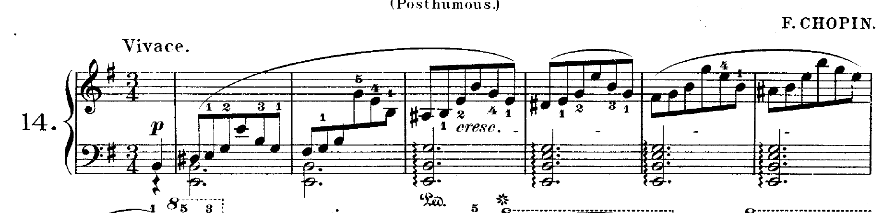
악보 첫 줄
악보 첫 줄에서 찾아봐요
높은음자리표와 낮은음자리표 위 줄은 오른손, 아래 줄은 왼손이에요.
♯ 한 개 줄 맨 앞, 파 자리에 샵이 하나 있어요. 곡 내내 파는 파♯으로 쳐요. 이 곡의 집(조성)은 마단조예요. 조금 슬프고 신비한 색깔이에요.
3/4 한 마디에 4분음표가 세 개. 쿵-짝-짝 왈츠 박자예요.
Vivace "비바체"라고 읽어요. 생기 있고 활기차게! "음악이 살아 움직이는 것처럼!"
첫 마디 맨 앞 마디에는 음이 하나뿐이에요. 세 번째 박에서 시작하는 "못갖춘마디"예요. 하나 둘 하고 셋에서 시작해요.
첫 번째 장
회오리바람이 불어와요
곡은 아주 작은 소리로 시작해요. 오른손이 8분음표로 빙글빙글 돌면서 점점 높이 올라가요. 회오리바람이 점점 커지는 것처럼요. 그리고 맨 꼭대기에서 "짠!" 하고 크게 터진 다음, 한 마디 동안 조용히 숨을 쉬어요.
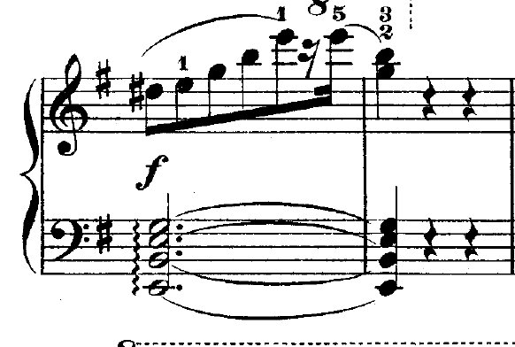
도입부 8마디
악보에서 찾아봐요
p 피아노, 여리게. 작게 시작해요. 여리게 친다고 힘없이 치는 건 아니에요.
cresc. 크레셴도, 점점 세게. 처음부터 크게 치지 말고 서서히 키워요. "작은 속삭임이 점점 자신감 있는 목소리로 바뀌는 장면을 상상해 봐."
f 포르테, 세게. 꼭대기에 도착! "자신 있게, 힘 있게!" 하지만 거칠게 치는 건 아니에요.
왼손 화음 앞 물결선 〰 화음을 한꺼번에 누르지 않고 아래에서 위로 "도르륵" 굴려서 쳐요.
8 · · · · 숫자 8과 점선 아래 음은 적힌 것보다 한 옥타브 높게 쳐요.
작은 숫자 1 2 3 4 5 손가락 번호예요. 엄지가 1, 새끼손가락이 5.
마지막 마디의 쉼표들 소리를 내지 않고 쉬는 표시예요. 이 쉬는 마디도 꼭 세어 주세요.
두 번째 장
무도회장의 첫 춤
회오리가 멈추면 드디어 춤이 시작돼요. 왼손은 쿵-짝-짝 하고 박자를 지켜 주고, 오른손은 발끝으로 살짝살짝 뛰듯이 노래해요. 높은 음으로 날아올랐다가 꾸밈음과 함께 사뿐히 내려앉아요.
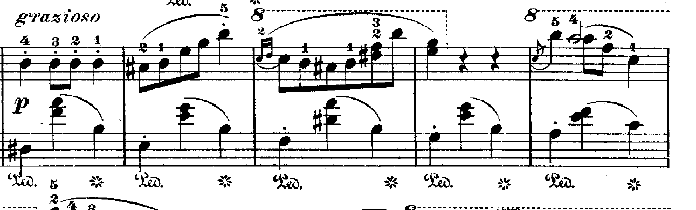
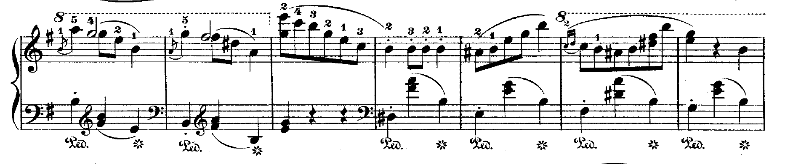
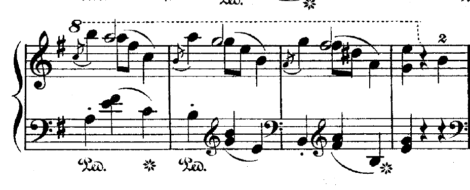
첫 번째 주제 16마디
악보에서 찾아봐요
grazioso "그라치오소", 우아하게, 품위 있고 아름답게. 느리고 얌전하게 치라는 뜻이 아니에요. 가볍고 세련되게 움직여요. "아주 아름다운 드레스를 입고 춤추는 사람이 있다고 상상해 봐. 움직임은 가볍지만 하나하나가 품위 있지?"
음표 위의 점 · 스타카토, 짧게 끊어서. 통통 튀는 발걸음이에요. 짧게 친다고 세게 치는 건 아니에요.
작은 음표 큰 음표 앞에 붙은 작은 음표는 꾸밈음이에요. 아주 빠르고 가볍게, 큰 음표보다 작게 쳐요. 쇼팽의 꾸밈음은 그냥 장식이 아니라, 노래를 말하듯 자연스럽고 우아하게 만들어 줘요.
Ped. 와 ✲ Ped.에서 오른쪽 페달을 밟고, ✲에서 떼요. 이 부분은 마디마다 밟았다 떼요.
왼손 쿵-짝-짝 첫 박의 낮은 음(쿵)은 깊게, 두 번째와 세 번째 박의 화음(짝짝)은 가볍게.
세 번째 장
노래하는 새 친구
이번에는 분위기가 바뀌어요. 통통 튀던 발걸음 대신, 음들이 손을 잡고 길게 이어지며 노래해요. 그러다 점점 힘이 붙어서 높은 곳까지 크게 올라갔다가, 다시 처음 춤으로 돌아갈 준비를 해요.
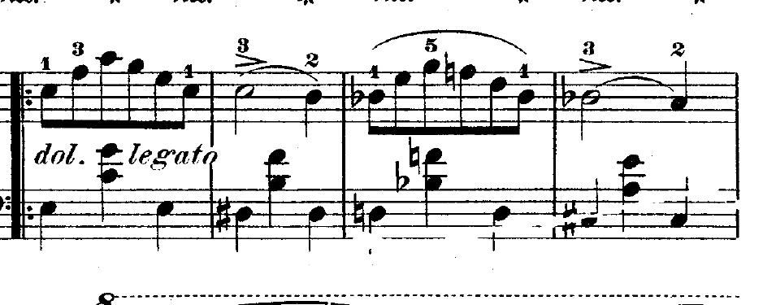
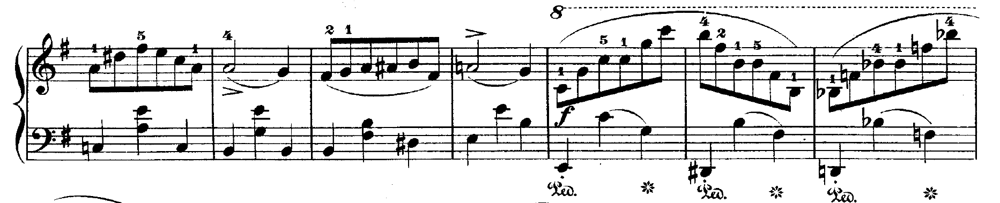
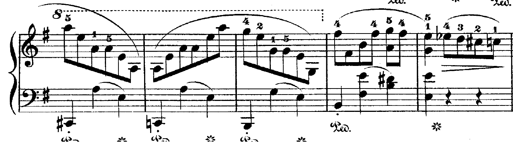
두 번째 주제 16마디
악보에서 찾아봐요
굵은 줄과 점 두 개 𝄆 도돌이표가 시작되는 곳이에요. 나중에 여기로 돌아오라는 표시인데, 콩쿨에서는 돌아오지 않아요. 네 번째 장에서 자세히 알려 줄게요.
dol. legato 돌체는 달콤하고 다정하게. 작게만 치라는 뜻이 아니라 따뜻하게 노래하듯 치라는 뜻이에요. "누군가에게 아주 소중한 이야기를 들려준다고 생각해 봐. 크게 말할 필요는 없지만 마음이 전해져야 해." 레가토는 음과 음을 매끄럽게 이어서. "음들이 서로 손을 잡고 걸어간다고 생각해 봐. 한 음이 끝나자마자 다른 음이 자연스럽게 이어지는 거야."
> 악센트. 그 음만 조금 더 힘주어 쳐요.
♭ 플랫, 반음 내려요. 갑자기 나타난 플랫이 노래에 그림자를 드리워요.
f 다시 세게! 높은 곳으로 힘차게 올라가요.
네 번째 장
다시 만난 첫 춤, 그리고 갈림길
"dol."이라는 글자와 함께 처음 춤이 다시 돌아와요. 두 번째 장에서 배운 그대로예요. 그런데 끝에 갈림길이 있어요. 숫자 1이 적힌 문과 숫자 2가 적힌 문이에요.
원래 악보대로라면 1번 문으로 들어가서 세 번째 장 처음(도돌이표)으로 돌아가 한 번 더 쳐요. 하지만 콩쿨에서는 반복하지 않기로 했으니까, 1번 문은 건너뛰고 바로 2번 문으로 가요. 그러면 곧바로 다음 장으로 넘어가요.
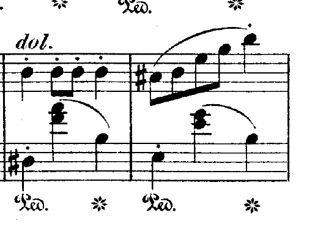
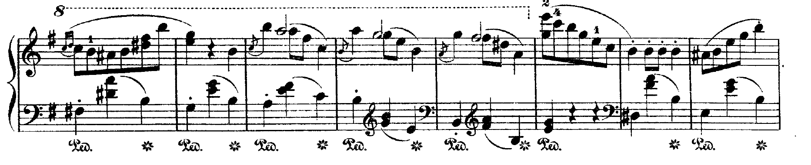
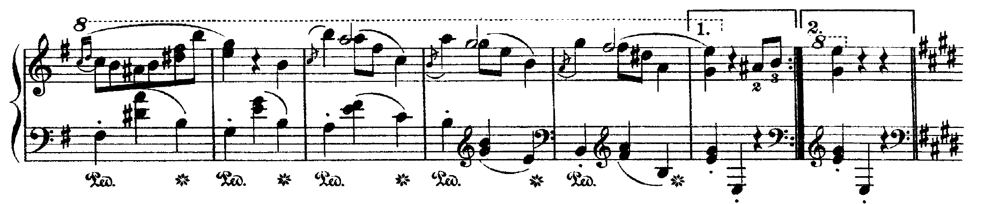
마지막 줄 오른쪽 끝에 1번, 2번 괄호가 있어요
악보에서 찾아봐요
1. 괄호 처음 칠 때만 들어가는 문. 콩쿨에서는 건너뛰어요.
점 두 개와 굵은 줄 𝄇 1번 괄호 끝의 도돌이표. 돌아가라는 뜻이지만 우리는 무시해요.
2. 괄호 반복이 끝난 뒤 들어가는 문. 우리는 바로 여기로!
2번 괄호 뒤의 두 줄 세로줄 이야기가 한 단락 끝났다는 표시예요. 바로 뒤에 샵이 네 개로 바뀌어요.
조성진 선생님은 공연에서 반복을 지켜서 쳤어요. 그래서 이 버튼은 반복이 끝난 두 번째 연주를 들려줘요. 2번 괄호로 넘어가는 소리를 그대로 들을 수 있어요.
다섯 번째 장
햇살이 비치는 정원
이제 곡의 한가운데, 완전히 다른 세상이에요. 같은 "미"를 중심으로 하는데, 슬픈 마단조에서 밝고 따뜻한 마장조로 바뀌었어요. 구름 사이로 햇살이 비치는 것 같아요.
오른손은 노래하는 사람처럼 긴 음을 부드럽게 불러요. 왼손은 낮은 음을 짚고 높은 음으로 살짝 건너가 반주해요.
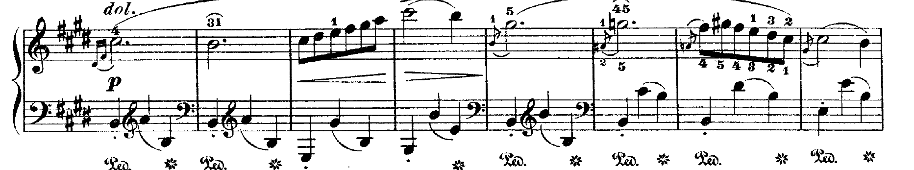
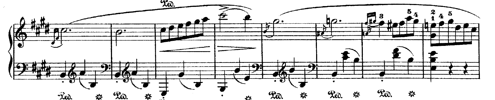
가운데 부분(트리오)의 처음 두 줄
악보에서 찾아봐요
♯ 네 개 파, 도, 솔, 레가 모두 샵이에요. 이 부분이 마장조예요. 샵을 빠뜨리지 않게 조심!
dol. 돌체, 달콤하고 다정하게. 세 번째 장에서 배운 "소중한 이야기를 들려주듯".
p 여리게. 크게 치지 않아도 노래가 들려요.
긴 곡선 슬러. 여러 음을 한 덩어리 노래로 묶어 줘요. 곡선 끝에서는 문장을 마치듯 살짝 정리해요.
루바토 (악보에는 없어요) 노래하는 부분에서 시간을 조금 여유 있게 쓰는 것. "이야기하다가 중요한 말을 하기 전에 잠깐 멈추기도 하지? 음악에서도 마음이 머무는 순간에는 조금 기다려 줄 수 있어." 하지만 왼손의 쿵-짝-짝 세 박자는 계속 느껴져야 해요.
작은 음표 두 개 첫 음 앞의 꾸밈음 두 개는 미끄러지듯 가볍게.
< 와 > 점점 세게, 점점 여리게. 파도처럼 부풀었다 가라앉아요.
왼손 높은음자리표 왼손 줄에 높은음자리표가 잠깐 나와요. 그 음은 높은음자리표로 읽어요.
여섯 번째 장
천둥, 그리고 속삭임
평화롭던 정원에 갑자기 천둥이 쳐요! 왼손이 아주 낮은 곳에서 빠르게 달려 올라오고, 오른손은 큰 화음을 힘차게 울려요. 이 곡에서 가장 큰 소리예요.
천둥이 지나가면 노래가 다시 돌아오는데, 이번에는 아주아주 작게, 멀리서 들리는 메아리처럼 속삭여요. 왼손은 물결처럼 8분음표로 흔들려요.
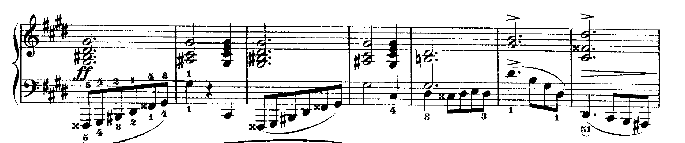
천둥(ff)
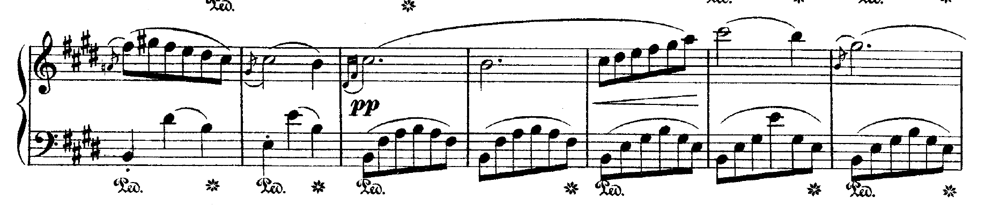
속삭임(pp)
악보에서 찾아봐요
ff 포르티시모, 아주 세게. 그래도 건반을 때리지 말고 팔 무게로 깊게.
𝄪 (x 모양) 겹올림표, 반음을 두 번 올려요. 처음 보면 놀라지만 그냥 한 음 위 흰 건반이에요.
pp 피아니시모, 아주 여리게. "아주 가까이 있는 사람에게만 들려주듯."
왼손 8분음표 물결 낮은 음에서 올라갔다 내려오는 여섯 개 음. 고르게, 작게.
일곱 번째 장
한 번 더 천둥, 그리고 작별 인사
천둥이 한 번 더 몰아쳐요. 그리고 햇살 정원의 노래가 마지막으로 아주 작게 불리고, 정원에 작별 인사를 해요.
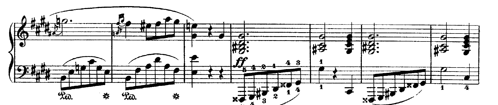
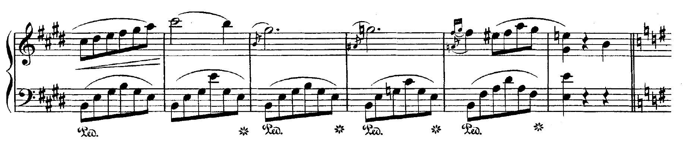
아래 줄 오른쪽 끝에서 샵이 다시 하나로 바뀌어요
악보에서 찾아봐요
♮ ♮ ♮ ♯ 두 줄 세로줄 뒤에 제자리표 세 개와 샵 하나. 샵 네 개를 지우고 다시 샵 하나(마단조)로 돌아간다는 뜻이에요.
쉼표 정원이 끝나는 마지막 마디에서 잠깐 쉬어요. 다음 장으로 넘어가기 전 숨 고르기!
여덟 번째 장
무도회장으로 돌아와요
정원을 떠나 다시 처음의 무도회장이에요. 두 번째 장의 첫 춤이 작은 소리로 돌아와요. 이미 아는 춤이니까 반가운 친구를 만난 것처럼 쳐 보세요.
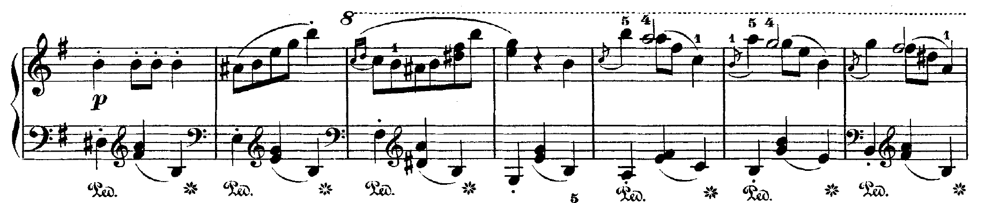
다시 돌아온 첫 춤
악보에서 찾아봐요
p 처음처럼 여리게.
스타카토 점과 꾸밈음 두 번째 장과 똑같이 통통, 사뿐히.
아홉 번째 장
마지막 회오리
이제 곡의 끝부분(코다)이에요. 처음의 회오리바람이 다시 불어와 점점 거세져요. 오른손은 반짝이는 음들로 높이 올라가고, 왼손은 짧은 화음으로 힘차게 받쳐 줘요.
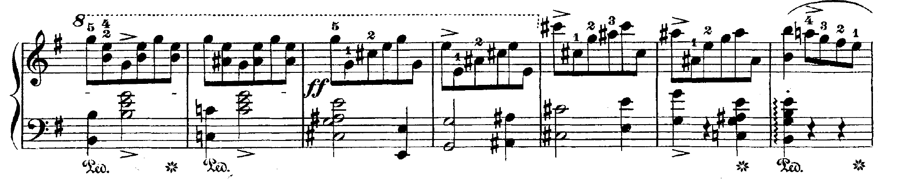
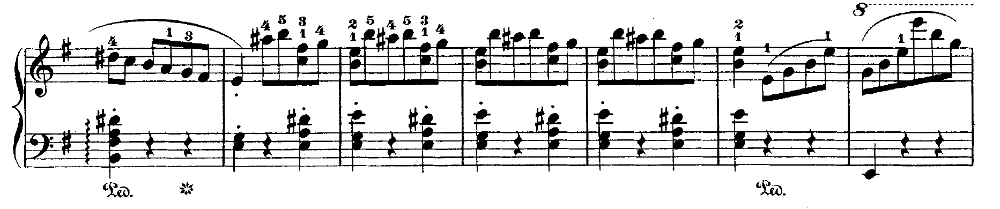
코다
악보에서 찾아봐요
f · cresc. · ff 세게, 점점 더 세게, 아주 세게. 소리가 계단처럼 커져요.
음표 두세 개가 세로로 쌓인 것 겹음이에요. 손가락 번호를 보고 한꺼번에 눌러요.
왼손 화음 위의 점 짧게 톡! 오른손이 바빠도 왼손 박자는 흔들리지 않게.
마지막 장
안녕, 하고 인사하기
회오리가 잦아들면서 오른손이 아래로 미끄러져 내려와요. 한 마디를 조용히 쉰 다음, 큰 화음 네 개로 "안녕!" 하고 인사하며 곡이 끝나요.
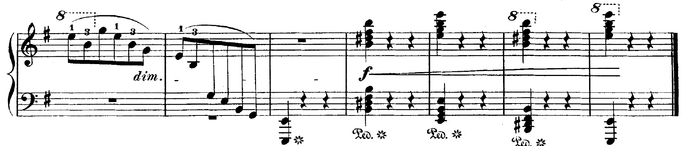
마지막 줄
악보에서 찾아봐요
dim. 디미누엔도, 점점 여리게.
마디 가운데 긴 막대 ▬ 온쉼표. 한 마디를 통째로 쉬어요. 마음속으로 하나 둘 셋!
f 와 긴 줄 마지막 화음들은 세게. "자신 있게, 힘 있게!" 하지만 화를 내듯 쾅쾅 치지 말고, 당당하게 인사해요.
굵은 마침줄 가는 줄과 굵은 줄이 붙은 세로줄. 곡이 끝났다는 표시예요.
연습할 때
오늘의 연습 체크
악보: 쇼팽 왈츠 마단조 유작, 카를 미쿨리 편집(G. Schirmer, 1894), IMSLP. 연주: 조성진, 2026년 4월 2일 런던 공연 실황.